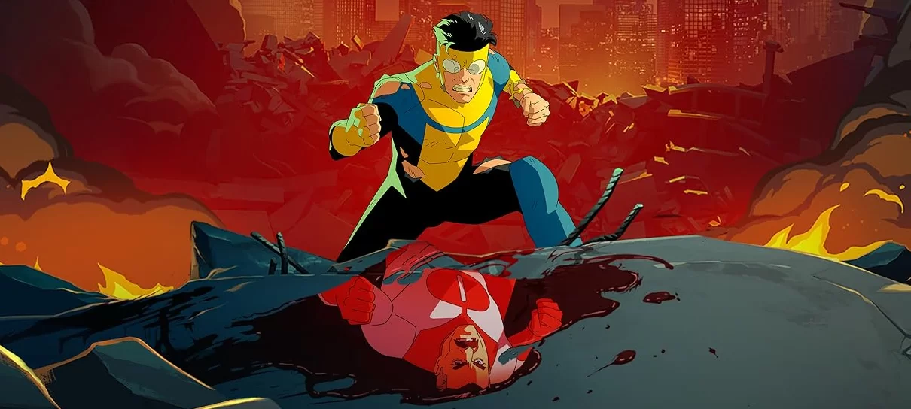

INVENCÍVEL
"Invincible" é uma série de animação para adultos baseada na série de quadrinhos de mesmo nome criada por Robert Kirkman, Cory Walker e Ryan Ottley. A história acompanha Mark Grayson, um jovem comum que descobre que seu pai é o super-herói mais poderoso do planeta, conhecido como Omni-Man. Mark herda os mesmos poderes de seu pai e decide seguir seus passos tornando-se o herói Invencível.

HISTÓRIA
A história começa com Mark Grayson, um adolescente comum que descobre que seu pai é o super-herói mais poderoso do planeta, conhecido como Omni-Man, que é basicamente um alienígena. Mark herda os mesmos poderes de seu pai e decide seguir seus passos, tornando-se o herói Invencível.
No entanto, a vida de Mark se torna cada vez mais complicada à medida que ele descobre segredos sombrios sobre seu pai e sua verdadeira missão na Terra. Ele descobre que os Viltrumitas têm planos para conquistar e colonizar outros planetas, incluindo a Terra. Nolan revela a Mark que ele foi enviado à Terra com o objetivo de conquista-lá, e sua missão era enfraquecer o planeta por dentro para facilitar a invasão Viltrumita.
Mark luta para aceitar a verdade sobre seu pai e se vê confrontado com escolhas difíceis. Ele continua lutando contra ameaças tanto terrestres quanto intergalácticas, enquanto tenta proteger aqueles que ama. Ao longo da série, Mark enfrenta inúmeras tragédias, perdas e desafios pessoais, mas também encontra apoio e amizade em outros heróis e aliados.
A trama se desenrola com reviravoltas chocantes, batalhas épicas e dilemas morais complexos. Mark enfrenta vilões poderosos, incluindo conquistadores alienígenas, mutantes, robôs gigantes e até mesmo outros Viltrumitas. Ele também se envolve em conflitos com outros heróis e governos, à medida que luta para proteger a Terra de ameaças de dentro e de fora.
PERSONAGENS PRINCIPAIS
SOBRE O AUTOR
Robert Kirkman é um renomado escritor de quadrinhos e produtor de televisão, mais conhecido por criar a série de quadrinhos "The Walking Dead". Nascido em 30 de novembro de 1978, Kirkman cresceu nos arredores de Lexington, Kentucky, nos Estados Unidos.
Em 2003, ele lançou "The Walking Dead", uma série em quadrinhos de horror e drama que rapidamente se tornou um fenômeno cultural, além de "The Walking Dead", Kirkman é conhecido por outras séries de quadrinhos de sucesso, incluindo "Invincible", uma série de super-heróis que também ganhou adaptação para uma série de animação, "Outcast", sobre possessões demoníacas, e "Oblivion Song", uma história de ficção científica sobre uma realidade paralela.